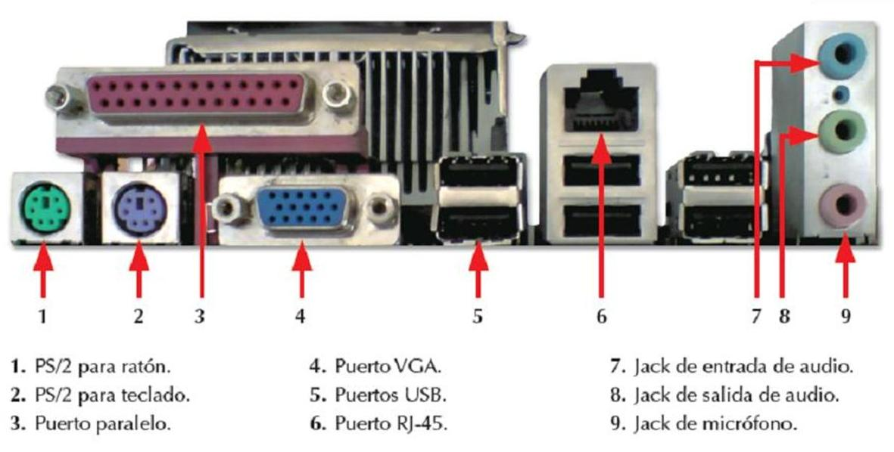

1.2.3.1 Módulos de Entrada-Salida
Un módulo de E/S tiene la responsabilidad de controlar uno o más dispositivos externos e intercambiar los datos entre esos dispositivos y la memoria central y/o los registros de la CPU. En consecuencia, el módulo de E/S debe tener una interfase interna al computador (al procesador y la memoria central) de alta velocidad y una interfase externa al computador (al dispositivo externo). Las funciones primordiales de un módulo de E/S:
- Control y Temporización (de estados)
- Comunicación con el procesador
- Comunicación con el dispositivo
- Buffering de datos
- Detección de errores.
- Manejo de Interrupciones en el bajo nivel.
Durante cualquier período o instante, el procesador puede comunicarse con uno o más dispositivos externos (en rigor, con uno o más módulos de E/S) de manera impredecible, dependiendo de las necesidades de E/S de los programas que están ejecutando. Los recursos internos, como la memoria docsity.como el bus del sistema, deben ser compartidos entre un número de actividades incluyendo a la E/S de datos. Luego, la función de E/S debe incluir un requerimiento de control y temporización, para coordinar el flujo del tráfico de datos y señales entre los recursos internos y los dispositivos externos. Por ejemplo, el controlar la transferencia de datos desde un dispositivo externo y el procesador, puede incluir los siguientes pasos:
1. El procesador interroga al módulo de E/S para verificar el estado (status) del dispositivo conectado.
2. El módulo de E/S devuelve el estado del dispositivo.
3. Si el dispositivo está operable y listo para transmitir, el procesador solicita la transferencia de datos, por medio de un comando al módulo de E/S.
4. El módulo de E/S obtiene una unidad de datos del dispositivo externo.
5. Los datos son transferidos desde el módulo de E/S al procesador. Si el sistema utiliza un bus, cada una de las interacciones entre el procesador y el módulo de E/S requieren de una o más arbitraciones del bus.
El simplificado escenario precedente también ilustra que el módulo de E/S debe tener la capacidad de ocuparse de la comunicación con el procesador y el dispositivo externo. La comunicación con el procesador incluye:
- Decodificación del comando: El módulo de E/S acepta comandos desde el procesador. Estos comandos generalmente son enviados como señales a través del bus de control.
- Datos: Los datos son intercambiados entre el procesador y el módulo de E/S a través del bus de datos.
- Informe de Estados: Las señales de estados más comunes son BUSY y READY. Puede haber también señales para informar varias condiciones de error.
- Reconocimiento de direcciones: De la misma forma que cada palabra en la memoria tiene una dirección, también la tiene cada dispositivo de E/S.
En consecuencia, un módulo de E/S debe reconocer la dirección única asociada a cada periférico que controla. * Comunicación con el dispositivo. El modulo de E/S debera hacer de buffer para equiparar las transferencias de datos a distintas velocidades y también es responsable de la detección de errores e informar al procesador de dichos errores. Un módulo de E/S que carga con la mayoría de los detalles del procesamiento, presentando una interfase de alto nivel a la CPU, se conoce normalmente como un canal o un procesador de E/S. Un módulo de E/S que es bastante primitivo y requiere un control detallado, se conoce comúnmente como un controlador de E/S o un controlador de dispositivo.
